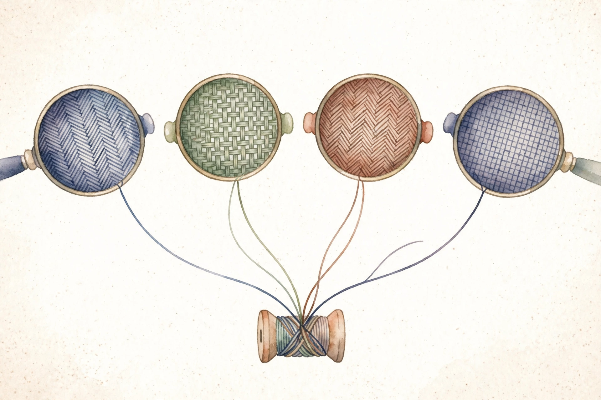
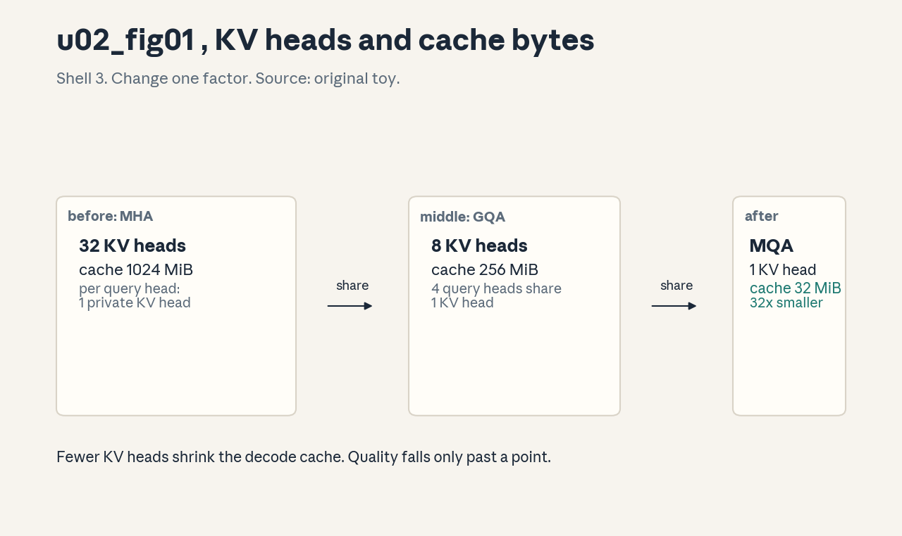

Unit 02 · Transformer variants and positional mechanisms
Twelve concepts attack the two walls of the transformer: the quadratic cost of attention and the question of where each token sits. Approximation, MHA, MQA, GQA, sinusoids, RoPE, ALiBi, layouts, the BERT family, caches, the complexity ledger, and the failure gallery. Every number below comes from the lesson.
How to read this page. Three tags separate fact from invention.
From the lesson A claim, number, or figure that appears in the lesson source, with its section cited.
Illustration Invented by the companion: an analogy, a toy with values you supply, or a what-if. Never lesson content.
Companion Editorial framing or a transferable principle. The lesson did not say it this way.

Section 1 · C01
From the lessonC01 items 2-5
Exact attention costs O(T^2 d). What if we never form the T by T matrix? The lesson answers with a kernel trick: replace exp(q dot k) with phi(q) dot phi(k) for a feature map phi. Then attention becomes phi(Q) times (phi(K)^T V), computed right to left in O(T d^2). The softmax kernel is a similarity function. Approximate the similarity with an inner product of random features, the matrix product associates the other way, and the quadratic term disappears. Randomness buys speed. Variance is the price.
From the lessonC01 items 5-6
The Performer draws random directions w_i and sets phi(x) = exp(w^T x minus |x|^2/2) / sqrt(m). Then the expected value of phi(q)^T phi(k) equals exp(q^T k): the approximation is unbiased. On the toy (T = 4096, d = 512), exact attention costs about 8.6e9 toy FLOPs and the linear form about 1.1e9, a ratio of 8.0. The ratio grows with T: at T = 32768 the gap is 64x. The minus |x|^2/2 term stabilizes the exponential features against overflow.
From the lessonC01 item 11
Unbiased does not mean good. At small m the variance swamps the signal and training diverges. Unbiasedness says nothing about any single run. Always report m and seed sweeps.
The quadratic cost lives in the order of multiplication. Compute phi(K)^T V first and the T by T matrix never exists.
Section 2 · C02
From the lessonC02 items 2-5
One attention pattern must track syntax, coreference, and position at once. Can it? Multi-head attention answers by splitting the work. The toy: d = 64, h = 4, so d_k = 16. Each head learns its own Q, K, V maps and its own pattern, and the outputs concatenate. Heads are parallel attention workers with private projections. Each sees the same input through different lenses. Concatenation plus a final projection mixes their votes.
From the lessonC02 items 5-6
The 1/sqrt(d_k) scale keeps dot products O(1) at init. The lesson's scale check: q, k drawn from N(0, 1) in 16 dims give q dot k distributed as N(0, 16). Dividing by sqrt(16) = 4 restores unit scale, so the softmax starts diffuse instead of saturated. Per-head parameters at d = 64, h = 4: 3 times 64 times 16 = 3072 for QKV, plus 64 times 64 = 4096 for W_o, total 7168 per layer.
From the lessonC02 items 4, 6 Head arithmetic bench: the lesson's d_k and parameter rules, on your d and h.
Try d = 768, h = 12 (lab E1 gives d_k = 64), then d = 128, h = 4 (lab E2). Watch d_k shrink as h grows at fixed d.
From the lessonC02 item 11
Heads do not always specialize. On some tasks they learn redundant copies, and pruning studies remove most heads with small loss. Specialization is an opportunity, not a guarantee.
Divide by sqrt(d_k) so the scores start diffuse. An unscaled softmax saturates at init and the heads learn nothing.
Section 3 · C03
From the lessonC03 items 2-5
At decode time the bottleneck is the KV cache load, not math. What if all query heads shared one KV head? The toy: 32 query heads, 1 KV head. The cache shrinks 32x and the queries keep their private projections. Queries stay diverse. Keys and values become a shared bulletin board. Every head reads the same board with its own question. Memory traffic falls. Representational bandwidth falls too.
From the lessonC03 items 5-6
Cache bytes = 2 (K and V) times layers times kv_heads times d_k times T times bytes. On the toy (32 layers, 32 query heads, d_k = 128, T = 2048, fp16): MHA cache 1024 MiB, MQA cache 32 MiB, ratio 32.0. The attention math is unchanged per head. Only the K and V projections are shared.

From the lessonC03 item 5 Cache bench: the lesson's cache formula, on your config.
Reproduce the lesson: 32 layers, kv 32 vs 1, d_k 128, T 2048 gives 1024 vs 32 MiB. Then try the lab: 24 layers, kv 1, d_k 64, T 4096 gives 24 MiB.
From the lessonC03 item 11
Sharing is not free. Small models trained with MQA from scratch underperform MHA on benchmarks. The capacity cut bites when the model is already small. Large models absorb the sharing.
Decode time is dominated by loading the KV cache, not by arithmetic. Share the KV heads and the wall moves 32x.
Section 4 · C04
From the lessonC04 items 2-5
MQA is fast but costs quality. MHA is quality but slow. Is there a dial? The toy: 32 query heads in 8 groups, each group of 4 shares one KV head. The cache falls 4x vs MHA. The group count G is the knob: G = h gives MHA, G = 1 gives MQA. On the same toy as C03, GQA with G = 8 gives 256 MiB against MHA 1024 MiB and MQA 32 MiB. The lesson notes as public knowledge, not course content, that Llama-2 70B uses G = 8 groups.
From the lessonC04 items 5, 11
Upcasting converts an MHA checkpoint to GQA by mean-pooling KV heads within each group. But pooling without continued training drops quality. The free-conversion story needs the recovery run. At G = 8 the gap to MHA is small in published reports.
GQA turns a binary choice into a dial. But mean-pooling KV heads is not free: the short continued-training run is what restores quality.
Section 5 · C05
From the lessonC05 items 2-5
Attention is permutation invariant. How does position 5 know it is fifth? The lesson's toy: add a position vector p_m to each token vector. Learned codes make p_m a table row. Fixed codes build p_m from sines and cosines: p at (m, 2i) = sin(m / 10000^{2i/d}), p at (m, 2i+1) = cos(m / 10000^{2i/d}). Position codes are name tags for slots. Learned tags adapt to the data but stop at the trained length. Fixed sinusoid tags follow a formula, so they extend to any length, with different frequencies tracking coarse vs fine position.
From the lessonC05 items 5-6
Wavelength of pair i: lambda_i = 2 pi times 10000^{2i/d}. Low i gives short waves that track exact offsets. High i gives long waves that track coarse region. On the toy (d = 6) the lesson computes wavelengths 6.3, 135.4, 2916.4. The curves over 64 positions show the fast pair oscillating and the slow pair barely moving.
From the lessonC05 items 9, 11
Learned positions carry a hard wall: position T_max + 5 has no trained row, the model sees garbage, and generation degrades. The lab prices a table at T_max = 512, d = 768: 393,216 parameters. Extrapolation needs relative codes, which is where the next two sections go.
Short waves pin down exact offsets. Long waves name coarse regions. One formula gives the model both, with zero parameters.
Section 6 · C06
From the lessonC06 items 2-5
Absolute codes leave an absolute residue in the dot product. Can position enter through relative offsets only? RoPE spins each 2D slice of Q and K by an angle proportional to position. Pair (x_0, x_1) at position m rotates by m times theta. Two vectors from positions m and n meet with relative angle (m minus n) times theta. Absolute position disappears from the dot product. Only distance survives. The rotation applies to Q and K only, never to V.
From the lessonC06 items 5-6
The proof is one line of rotation algebra: the transpose flips the sign, rotations compose by addition, and the result is a function of (n minus m). The toy: x = (1, 0), m = 1, theta = 1.0 gives y = (0.5403, 0.8415), which is (cos 1, sin 1). The relative check R(1) R(2)^T against R(minus 1) holds with max error 1.11e-16: exact to machine precision. The angle per pair is theta_i = base^{minus 2i/d}, with base often 10000.
From the lessonC06 items 4, 7 RoPE bench: rotate a 2D pair by m times theta, the lesson's rule.
Reproduce the lesson: (1, 0), m = 1, theta = 1 gives (0.5403, 0.8415). Then try the lab: (0, 1), m = 2, theta = 0.5. Check the norm never changes.
From the lessonC06 item 11
RoPE does not extrapolate to any length. Positions far past training see angle combinations never seen, and perplexity explodes. Fixes: a larger base, or position interpolation.
Rotate Q and K by position-dependent angles and the dot product keeps only the offset. Absolute position never enters the score.
Section 7 · C07
From the lessonC07 items 2-5
RoPE's angles still wrap past training length. Is there a scheme with no angles at all? ALiBi answers: score s_{ij} = q_i dot k_j minus m_h times |i minus j|. Far pairs pay a linear penalty. No position vector exists. Relative schemes tax distance directly. T5 adds a learned bucketed bias per offset (32 buckets, log-spaced past 128). ALiBi subtracts a fixed per-head slope times distance, with slopes m_h = 2^{minus 8h/H}. Both make far mean unlikely without any absolute code.
From the lessonC07 items 5-6
The toy: 4 positions, head slope m = 0.5. Distance 3 costs 1.5 logit points, a factor exp(minus 1.5) of about 0.22 in weight. The near field dominates by construction. Because the rule uses only i minus j, it applies at any length: extrapolation is structural, not learned.
From the lessonC07 item 11
The penalty that helps extrapolation hurts retrieval. Tasks needing exact far recall, like long-range copying, suffer under strong slopes. Distance penalty is not free.
A fixed distance tax works at any length with zero parameters. The same tax that tames far positions starves far recall.
Section 8 · C08
From the lessonC08 items 2-5
BERT reads both ways, GPT reads left to right, T5 has two stacks. Which wiring does what? The lesson's toy sentence is the cat sat. Encoder: every position sees every position. Decoder: position i sees positions up to i. Encoder-decoder: the decoder queries the encoder's final states. The mask is the layout.
From the lessonC08 items 4-6
Encoder self scores: (T, T), unmasked. Decoder self scores: (T, T), causal. Cross scores: (T_dec, T_enc), with queries from the decoder and keys and values from the encoder. On shapes S = 16, T = 8, d = 64, h = 4, cross scores are (B, 4, 8, 16). The encoder runs once. The decoder runs per step. That asymmetry is why decoders dominate serving cost.
| Layout | Self mask | Cross | Best for |
|---|---|---|---|
| Encoder-only (BERT) | none, bidirectional | none | Understanding, classification |
| Decoder-only (GPT) | causal | none | Open generation |
| Encoder-decoder (T5) | none + causal | (T_dec, T_enc) | Sequence-to-sequence |
From the lessonC08 item 11
Bidirectional is not always better. For generation, bidirectional targets leak the future. The layout must match the task's causality.
Encoder reads, decoder writes, encoder-decoder reads then writes. Pick the layout whose information flow matches the task.
Section 9 · C09
From the lessonC09 items 2-5
No labels exist for raw text. How does an encoder learn anything? The toy: the [MASK] sat. The model predicts cat from both sides. That is masked language modeling. MLM hides 15% of tokens and predicts them from context. The original BERT added NSP: predict whether sentence B follows A. RoBERTa dropped NSP, trained longer, used bigger batches and more data. DistilBERT trains a small student to mimic a big teacher's outputs, and the soft targets carry the teacher's uncertainty, the dark knowledge.
From the lessonC09 items 6, 9
Mask 15% of T = 128: about 19 positions train per sequence, 109 are context only. Only 15% of positions produce loss, which is sample-inefficient next to causal LM where 100% of positions train. Bidirectional context is the compensation. The lesson cites as public knowledge, not course content, that DistilBERT keeps about 97% of BERT's GLUE score at 40% of the parameters.
From the lessonC09 item 11
NSP did not help. RoBERTa removed it with no loss, and later work showed the signal was mostly topic, not order. Pretext tasks need ablations, not faith.
MLM works because predicting hidden tokens from both sides is a real task. NSP looked useful until someone removed it. Test every auxiliary loss by deletion.
Section 10 · C10
From the lessonC10 items 2-5
Generating token 500 recomputes keys for tokens 1 through 499 unless we store them. What exactly is stored? Per layer: K_cache and V_cache at (B, kv_heads, T_cached, d_k). Prefill processes the prompt in parallel and writes all K and V. Decode handles one new token at a time: project one Q, K, V, append, attend over the cache. The cache turns O(T^2) rework into O(T) appends. Attention over the cache stays O(T) per step, because the new token must read the past, but the projections stop repeating.
From the lessonC10 items 6, 9
The C03 toy again: MHA 1024 MiB, GQA-8 256 MiB, MQA 32 MiB at T = 2048. Encoder-decoder adds asymmetry: the encoder cache is written once for S positions and read by every decode step, while the decoder self-cache grows per step. Per step the cost is O(T d) attention plus O(d^2) projections. The cache is the serving memory wall. That is why MQA and GQA exist.
From the lessonC10 item 11
Prefix caching has a correctness trap. A stale entry can serve another user's context. Cache keys must include the full prefix identity. Correctness first, sharing second.
Prefill writes once in parallel. Decode appends one token at a time. The cache is exact past K and V, and its key must identify the full prefix.
Section 11 · C11
From the lessonC11 items 4-6
Which term kills you first at T = 8192, d = 4096: the scores or the weights? The lesson builds the ledger. QK^T costs O(T^2 d): each of T^2 outputs is a d-dot product. Softmax is O(T^2). Attention times V is another T^2 d. Projections are O(T d^2). The crossover: T^2 d beats T d^2 exactly when T beats d. On the toy (T = 4096, d = 512): T^2 d = 8.6e9, T d^2 = 1.1e9, scores dominate 8 to 1. At T = 128, d = 4096: T d^2 = 2.1e9 vs T^2 d = 6.7e7, and the FFN and projections dominate. The regime flips at T = d.
From the lessonC11 items 2, 9
Memory first, compute second. Scores at (h, T, T) with h = 8, T = 8192: 8 times 8192^2 = 5.4e8 floats = 2.1 GB in fp32 per layer, while weights are fixed. Flash Attention attacks the memory wall without changing the FLOP count: same math, far less IO.
From the lessonC11 items 4-5 Ledger bench: the lesson's per-layer terms, on your T and d.
Reproduce the lesson: T = 4096, d = 512 gives 8.6e9 vs 1.1e9. Then flip to T = 128, d = 4096 and watch the winner change.
From the lessonC11 item 11
Fewer FLOPs does not mean faster. An approximation with fewer FLOPs but poor memory locality runs slower than dense attention with a fused kernel. FLOPs are not time.
The ledger names the dominant term and the T = d crossover. The profiler names the winner. They disagree whenever memory locality decides.
Section 12 · C12
From the lessonC12 items 2-5
The model trains fine at 2k context and collapses at 8k. What are the suspects? The lesson collects five: length extrapolation, attention sink, rank collapse, RoPE base mismatch, head redundancy. Every efficient choice buys a failure mode. Diagnose by signature, not by guess. Rank collapse: repeated attention plus residual, without enough FFN and norm diversity, drives token representations toward a rank-1 matrix. The residual path and the FFN are the counterforce. Attention sink: the softmax needs somewhere to dump mass when nothing matches, and position 0 becomes the dump.
From the lessonC12 items 6, 8
The sink toy: scores [5, 0, 0, 0] for a query with no good match give softmax [0.981, 0.006, 0.006, 0.006]. Position 0 absorbs 98% of the mass without meaning anything. That is the signature in one row. The diagnostic order: perplexity vs length curve, mean attention mass on position 0, effective rank of layer outputs, head map diversity. A cliff at exactly T_max points at positions. A gradual rise points at capacity.
| Failure | Signature | Fix direction |
|---|---|---|
| Length extrapolation | Perplexity cliff past trained length | Larger RoPE base, position interpolation |
| Attention sink | Position 0 absorbs mass with length | Bound the dump, check the curve |
| Rank collapse | Token vectors converge, rank falls | Residual path and FFN diversity |
| RoPE base mismatch | Wrong base for the target length | Retune the base for the length |
| Head redundancy | Near-identical attention maps | Measure diversity, prune or retrain |
From the lessonC12 item 11
The list is not complete, and data shift mimics every architectural signature. Always run the same diagnostics on a length-matched in-domain sample first.
Five signatures, five fixes. But distribution shift wears every mask in the gallery. The control experiment comes first.
Wisdom index